Circuitos con Temporizador 555
Autor original: Bill Marsden
El circuito integrado 555
El circuito integrado 555 es el chip más popular jamás fabricado. Fabricado de forma independiente por más de 10 fabricantes, todavía en producción actual y con casi 40 años, este pequeño circuito ha resistido la prueba del tiempo. Ha sido rediseñado, mejorado y reconfigurado de muchas maneras, pero el diseño original se puede comprar a través de muchos proveedores. El diseño de este chip acertó a la primera.
Concebidos originalmente en 1970 y creados por Hans R. Camenzind en 1971, en 2003 se fabricaron más de mil millones de estos circuitos integrados sin ninguna reducción aparente en la demanda. Se ha utilizado en todo, desde juguetes hasta naves espaciales. Debido a su versatilidad, disponibilidad y bajo costo, sigue siendo el favorito de los aficionados.
Uno de los secretos de su éxito es que es una verdadera caja negra, su esquema simbolizado es lo suficientemente simple y preciso como para que los diseños que utilizan esta simplificación como referencia tienden a funcionar a la primera. No es necesario comprender todos los transistores del esquema básico para que funcione.
Se ha utilizado para derivar el 556, un 555 dual, cada uno independiente del otro en un paquete de 14 pines, y es la inspiración del 558, un temporizador cuádruple en un paquete de 16 pines. Los pocos puntos débiles que tenía el diseño original se han solucionado mediante rediseños en la tecnología CMOS, con sus requisitos de corriente dramáticamente reducidos y voltaje ampliado, y aún así la versión original permanece.
Originalmente concebido como un temporizador simple, el 555 se ha utilizado para osciladores, generadores de formas de onda, VCO, discriminación de FM y mucho más. Realmente es un circuito para todo uso.
FUENTES
- El 555 Timer IC: una entrevista con Hans Camenzind (http://semiconductormuseum.com/Transistors/LectureHall/Camenzind/Camenzind_Index.htm )
- 555 Tutorial ( http://www.sentex.ca/~mec1995/gadgets/555/555.html )
- 555 Timer IC Encyclopedia Article ( http://www.nationmaster.com/encyclopedia/555-timer-IC )
555 Schmitt Trigger
PIEZAS Y MATERIALES
- Una batería de 9 V
- Clip de batería (catálogo de Radio Shack # 270-325)
- Mini clips de gancho (soldados al clip de batería, catálogo de Radio Shack n.º 270-372)
- Un potenciómetro, 10 KΩ, 15 vueltas (catálogo de Radio Shack n.º 271-343)
- Un IC de temporizador 555 (catálogo de Radio Shack # 276-1723)
- Un diodo emisor de luz roja (catálogo de Radio Shack # 276-041 o equivalente)
- Un diodo emisor de luz verde (catálogo de Radio Shack # 276-022 o equivalente)
- Dos resistencias de 1 KΩ
- Un DVM (voltímetro digital) o VOM (voltímetro ohmio)
REFERENCIAS CRUZADAS
Lecciones en circuitos eléctricos, Volumen 3, capítulo 8: “Comentarios positivos”
Lecciones en circuitos eléctricos, Volumen 4, capítulo 3: “Niveles de voltaje de señal lógica”
OBJETIVOS DE APRENDIZAJE
- Aprenda cómo funciona un disparador Schmitt
- Cómo utilizar el temporizador 555 como disparador Schmitt
DIAGRAMA ESQUEMÁTICO
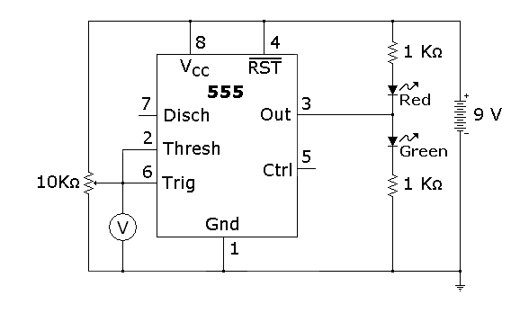
Los disparadores Schmitt tienen una convención para mostrar una puerta que también es un disparador Schmitt, como se muestra a continuación.
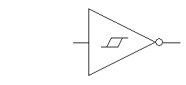
El mismo esquema rediseñado para reflejar esta convención se parece a esto:
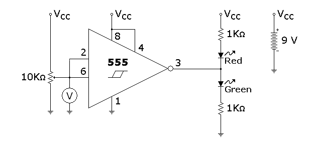
ILUSTRACIÓN
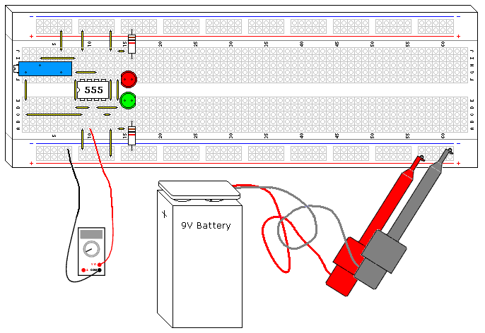
INSTRUCCIONES
El temporizador 555 es probablemente uno de los chips de "caja negra" más versátiles. Su divisor de voltaje de 3 resistencias, 2 comparadores y su flip-flop de reinicio integrado están conectados para formar un disparador Schmitt en este diseño. Es interesante notar que la configuración ni siquiera se acerca a la configuración del amplificador operacional que se muestra en otra parte, pero el resultado final es idéntico.
Intente ajustar el potenciómetro hasta que las luces cambien de estado, luego mida el voltaje. Compare este voltaje con el voltaje de la fuente de alimentación. Ajuste el potenciómetro en la otra dirección hasta que el LED vuelva a girar y mida el voltaje. ¿Qué tan cerca llegaste de las marcas de 1/3 y 2/3?
Intente sustituir la batería de 9 V por una batería de 6 voltios, o dos baterías de 6 voltios, y observe qué tan cerca están los umbrales de las marcas 1/3 y 2/3.
Los disparadores Schmitt son un circuito fundamental con varios usos. Uno es el procesamiento de señales, pueden extraer datos digitales de algunos entornos extremadamente ruidosos. Otros usos importantes se mostrarán en proyectos siguientes, como un oscilador RC extremadamente simple.
TEORÍA DE FUNCIONAMIENTO
La característica que define a cualquier disparador Schmitt es su histéresis. En este caso, es 1/3 y 2/3 del voltaje de la fuente de alimentación, definido por el divisor de voltaje de resistencia incorporado en el 555. Los comparadores integrados C1 y C2 comparan el voltaje de entrada con las referencias proporcionadas por el divisor de voltaje y usan la comparación para activar el flip-flop incorporado, que impulsa el controlador de salida, otra característica interesante del 555. El 555 puede conducir hasta 200 mA a cada lado del riel de la fuente de alimentación, el controlador de salida crea una ruta de conducción muy baja a ambos lados de las conexiones de la fuente de alimentación. El circuito "cortocircuita" cada lado del circuito LED, dejando que el otro lado se ilumine.
Las resistencias de 5KΩ no son muy precisas. Es interesante observar que la fabricación de circuitos integrados generalmente no permite resistencias de precisión, pero las resistencias comparadas entre sí tienen un valor extremadamente cercano, lo cual es fundamental para el funcionamiento del circuito.
555 HYSTERETIC OSCILLATOR
PIEZAS Y MATERIALES
- Una batería de 9 V
- Clip de batería (catálogo de Radio Shack # 270-325)
- Mini clips de gancho (soldados al clip de batería, catálogo de Radio Shack n.º 270-372)
- U1 - 555 temporizador IC (catálogo de Radio Shack # 276-1723)
- D1 - Diodo emisor de luz roja (catálogo de Radio Shack n.º 276-041 o equivalente)
- D2 - Diodo emisor de luz verde (catálogo de Radio Shack n.° 276-022 o equivalente)
- Resistencias R1,R2 - 1 KΩ 1/4W
- R3 - Resistencia 10 Ω 1/4W
- R4 - Potenciómetro de 15 vueltas, 10 KΩ (catálogo de Radio Shack n.° 271-343)
- C1 - Condensador de 1 µF (catálogo de Radio Shack 272-1434 o equivalente)
- C1 - Condensador de 100 µF (catálogo de Radio Shack 272-1028 o equivalente)
REFERENCIAS CRUZADAS
Lecciones en circuitos eléctricosVolumen 1, capítulo 16: Cálculos de voltaje y corriente.
Lecciones en circuitos eléctricos, Volumen 1, capítulo 16: Resolviendo para tiempo desconocido
Lecciones en circuitos eléctricos, Volumen 4, capítulo 10: Multivibradores
Lecciones de circuitos eléctricos, volumen 3, capítulo 8: retroalimentación positiva
OBJETIVOS DE APRENDIZAJE
- Aprenda a utilizar un disparador Schmitt para un oscilador RC simple
- Aprenda una aplicación práctica para una constante de tiempo RC
- Conozca una de las varias configuraciones del multivibrador Astable con temporizador 555
DIAGRAMA ESQUEMÁTICO
Aquí hay una forma de dibujar el esquema:
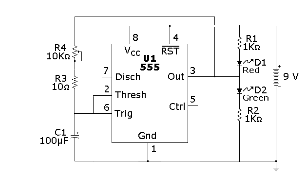
Como se mencionó en el experimento anterior, también existe otra convención, que se muestra a continuación:
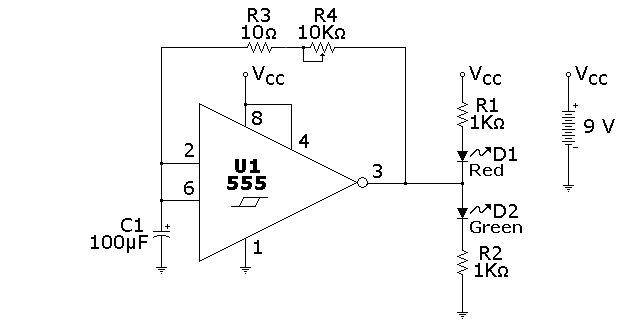
ILUSTRACIÓN
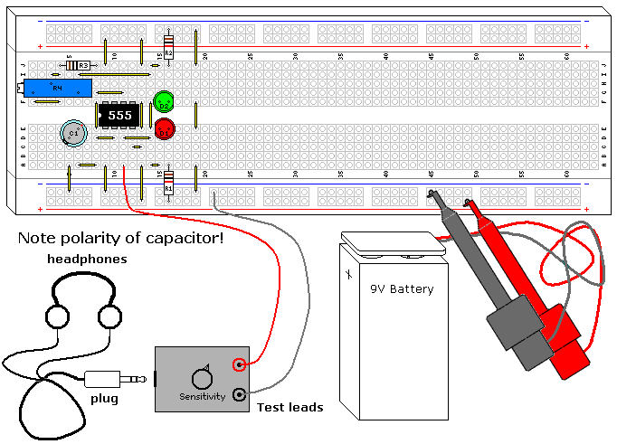
INSTRUCCIONES
Este es uno de los osciladores RC más básicos. Es simple y muy predecible. Cualquier disparador Schmitt inversor funcionará en este diseño, aunque la frecuencia cambiará un poco dependiendo de la histéresis de la puerta.
Este circuito tiene una frecuencia final inferior de 0,7 Hertz, lo que significa que cada LED se alternará y se encenderá durante poco menos de un segundo cada uno. A medida que gire el potenciómetro en el sentido contrario a las agujas del reloj, la frecuencia aumentará y se adentrará en el rango de audio de gama alta. Puedes verificar esto con el Detector de Audio (Vol. VI, Capítulo 3, Sección 12) o un altavoz piezoeléctrico, a medida que continúas girando el potenciómetro el tono del sonido aumentará. Puede aumentar la frecuencia 100 veces reemplazando el capacitor con el capacitor de 1 µF, lo que también elevará la frecuencia máxima hasta el rango ultrasónico, alrededor de 70 Khz.
El 555 no va de carril a carril (no alcanza el voltaje de suministro superior) debido a sus transistores Darlington de salida, y esto hace que la onda cuadrada de los osciladores no sea del todo simétrica. ¿Puedes ver esto mirando los LED? Cuanto mayor es la tensión de alimentación, menos pronunciada es esta asimetría, mientras que empeora con tensiones de alimentación más bajas. Si la salida fuera verdadera de riel a riel, sería una onda cuadrada del 50%, que se puede lograr si se usa la versión CMOS del 555, como el TLC555 (Radio Shack P/N 276-1718).
Se agregó R3 para evitar un cortocircuito en la salida IC a través de C1, ya que el capacitor pone en cortocircuito la porción de CA de la salida 555 a tierra. Con una batería descargada no se nota, pero con 9V nuevos el 555 IC se calentará mucho. Si eliminas la resistencia y ajustas R4 a la frecuencia máxima, puedes probar esto, no es bueno para la batería ni para el 555, pero sobrevivirán una prueba corta.
TEORÍA DE FUNCIONAMIENTO
Este es un oscilador histerético, que es un tipo de oscilador de relajación. También es un multivibrador astable. Es una consecuencia lógica del experimento 555 Schmitt Trigger mostrado anteriormente.
La fórmula para calcular la frecuencia con esta configuración usando un 555 es:
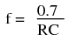
La histéresis 555 depende del voltaje de suministro, por lo que la frecuencia del oscilador sería relativamente independiente del voltaje de suministro si no fuera por la falta de salida de riel a riel.
La salida de un 555 va a tierra o relativamente cerca del voltaje positivo. Esto permite que la resistencia y el condensador se carguen y descarguen a través del pin de salida. Al ser una señal de tipo digital, los LED interactúan muy poco en su funcionamiento. El primer pulso generado por el oscilador es un poco más largo que el resto. Esto y las curvas de carga/descarga se muestran en la siguiente ilustración, que también muestra por qué se crea la onda cuadrada asimétrica.
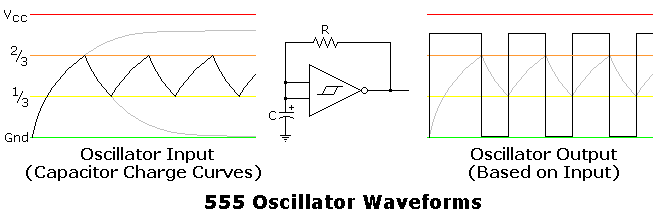
555 MONOSTABLE MULTIVIBRATOR
PIEZAS Y MATERIALES
- Una batería de 9 V
- Clip de batería (catálogo de Radio Shack # 270-325)
- Mini clips de gancho (soldados al clip de batería, catálogo de Radio Shack n.º 270-372)
- Un reloj con segundero/pantalla o un cronómetro
- Un cable, de 11/2" a 2" (3,8 mm a 5 mm) de largo, doblado por la mitad (se muestra como cable rojo en la ilustración)
- U1 - 555 temporizador IC (catálogo de Radio Shack # 276-1723)
- D1 - Diodo emisor de luz roja (catálogo de Radio Shack n.º 276-041 o equivalente)
- D2 - Diodo emisor de luz verde (catálogo de Radio Shack n.° 276-022 o equivalente)
- Resistencias R1,R2 - 1 KΩ 1/4W
- Resistencia Rt - 27 KΩ 1/4W
- Resistencia Rt - 270 KΩ 1/4W
- C1,C2 - Condensador de 0,1 µF (catálogo de Radio Shack 272-1069 o equivalente)
- Ct - Condensador de 10 µF (catálogo de Radio Shack 272-1025 o equivalente)
- Ct - Condensador de 100 µF (catálogo de Radio Shack 272-1028 o equivalente)
REFERENCIAS CRUZADAS
Lecciones en circuitos eléctricos, Volumen 1, capítulo 13: “Campos eléctricos y capacitancia”
Lecciones en circuitos eléctricos, Volumen 1, capítulo 13: “Condensadores y cálculo”
Lecciones en circuitos eléctricos, Volumen 1, capítulo 16: “Cálculos de tensión y corriente”
Lecciones en circuitos eléctricos, Volumen 1, capítulo 16: “Resolver en tiempo desconocido”
Lecciones en circuitos eléctricos, Volumen 4, capítulo 10: “Multivibradores monoestables”
OBJETIVOS DE APRENDIZAJE
- Aprende cómo funciona un Multivibrador Monoestable
- Aprenda una aplicación práctica para una constante de tiempo RC
- Cómo utilizar el temporizador 555 como Multivibrador Monoestable
DIAGRAMA ESQUEMÁTICO
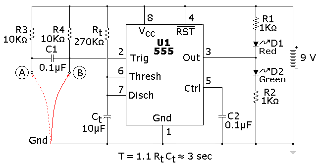
ILUSTRACIÓN
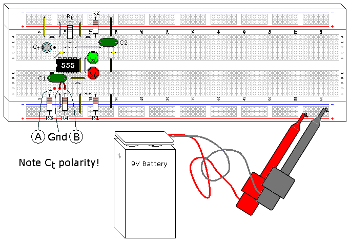
INSTRUCCIONES
Este es uno de los circuitos 555 más básicos. Este circuito es parte de esta hoja de datos de chips, completo con las matemáticas necesarias para diseñar según las especificaciones, y es una de las razones por las que se hace referencia a un 555 como temporizador. El LED verde que se muestra en la ilustración se enciende cuando la salida 555 está alta (es decir, cambia a Vcc) y el LED rojo se enciende cuando la salida 555 está baja (es decir, cambia a tierra).
Este multivibrador monoestable en particular (también conocido como monoestable o temporizador) no es del tipo reactivable. Esto significa que una vez activado ignorará más entradas durante un ciclo de tiempo, con una excepción, que se analizará en el siguiente párrafo. El temporizador comienza cuando la entrada baja, o cambia al nivel del suelo, y la salida sube. Puede comprobarlo conectando el cable rojo que se muestra en la ilustración entre tierra y el punto B, desconectándolo y reconectándolo.
Es una condición ilegal que la entrada permanezca baja para este diseño después del tiempo de espera. Por esta razón, se agregaron R3 y C1 para crear un acondicionador de señal, que permitirá el disparo solo por flanco y evitará la entrada ilegal. Puedes probar esto conectando el cable rojo entre tierra y el punto A. El temporizador comenzará cuando el cable se inserte en el protoboard entre estos dos puntos e ignorará más contactos. Si fuerza la entrada del temporizador a permanecer baja después del tiempo de espera, la salida permanecerá alta, aunque el temporizador haya terminado. Tan pronto como se elimine esta conexión a tierra, el temporizador bajará.
Rt y Ct se seleccionaron durante 3 segundos de duración. Puedes verificar esto con un reloj, 3 segundos es tiempo suficiente para que los humanos lentos podamos medirlo. Intente intercambiar Rt y Ct con la resistencia de 27 KΩ y el condensador de 100 µF. Dado que la respuesta a la fórmula es la misma, no debería haber diferencia en su funcionamiento. Luego intente cambiar Rt con la resistencia de 270 KO, dado que la constante de tiempo RC ahora es 10 veces mayor, debería acercarse a los 30 segundos. La resistencia y el condensador probablemente tengan una tolerancia del 5% y el 20% respectivamente, por lo que los tiempos calculados que midas pueden variar hasta un 25%, aunque normalmente serán mucho más cercanos.
Otra característica interesante del 555 es su inmunidad al voltaje de la fuente de alimentación. Si cambiara la batería de 9 V por una de 6 V o 12, debería obtener resultados idénticos, aunque la intensidad de la luz LED cambiará.
C2 en realidad no es necesario. El 555 IC tiene esta opción en caso de que el temporizador se utilice en un entorno donde la línea de suministro de energía sea ruidosa. Puedes quitarlo y no notar la diferencia. El 555 en sí es una fuente de ruido, ya que hay un período de tiempo muy breve en el que los transistores en ambos lados de la salida conducen, creando una sobretensión (medida en nanosegundos) de la fuente de alimentación.
TEORÍA DE FUNCIONAMIENTO
Mirando el esquema funcional que se muestra (Figuraa continuación), puedes ver que el pin 7 es un transistor que va a tierra.
{kind=link}
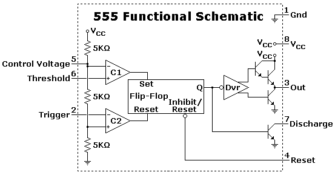
Este transistor es simplemente un interruptor que normalmente conduce hasta que el pin 2 (que está conectado a través del comparador C1, que alimenta el flip-flop interno) baja, permitiendo que el capacitor Ct comience a cargarse. El pin 7 permanece apagado hasta que el voltaje en Ct se carga a 2/3 del voltaje de la fuente de alimentación, donde el temporizador expira y el transistor del pin 7 se enciende nuevamente, su estado normal en este circuito.
Lo siguiente (Figuraa continuación) mostrará la secuencia de conmutación, siendo el rojo los voltajes más altos y el verde la tierra (0 voltios), con el espectro en el medio ya que se trata fundamentalmente de un circuito analógico.
{kind=link}
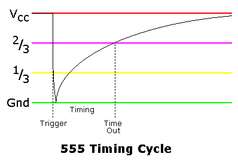
Este gráfico muestra la curva de carga a través del Ct.
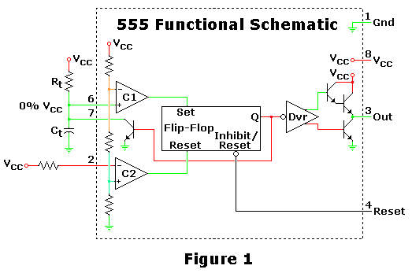
Cifra 1es el punto inicial y final de este circuito, donde espera un disparador para iniciar un ciclo de cronometraje. En este punto el transistor del pin 7 está encendido, manteniendo el condensador Ct descargado.
{kind=link}
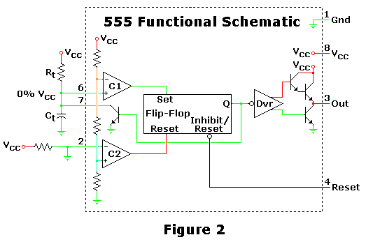
Cifra 2muestra lo que sucede cuando el 555 recibe un disparador, iniciando la secuencia. Ct no ha tenido tiempo de acumular voltaje, pero la carga ha comenzado.
{kind=link}
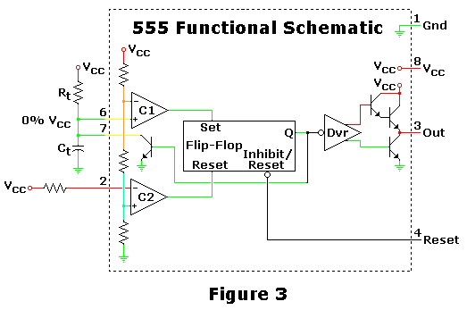
Cifra 3muestra el capacitor cargándose, durante este tiempo el circuito está en una configuración estable y la salida es alta.
{kind=link}
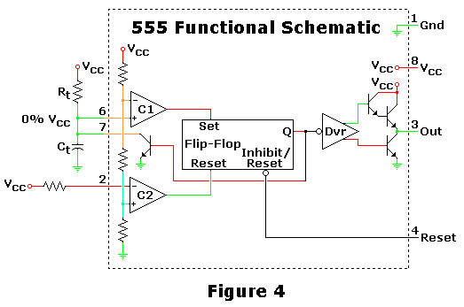
Cifra 4muestra el circuito en medio del apagado cuando llega al tiempo de espera. El condensador se ha cargado al 67%, el límite superior del circuito 555, lo que hace que su flip-flop interno cambie de estado. Como se muestra, el transistor aún no ha conmutado, lo que descargará Ct cuando lo haga.
{kind=link}
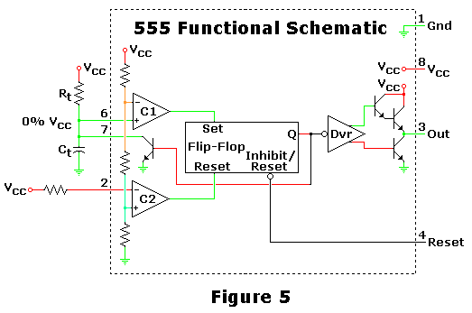
Cifra 5muestra el circuito después de que se ha asentado, que es básicamente el mismo que se muestra en la Figura 1.
{kind=link}
CMOS 555 LONG DURATION MINIMUM PARTS RED LED FLASHER
PIEZAS Y MATERIALES
- Dos pilas AAA
- Clip de batería (catálogo de Radio Shack # 270-398B)
- Un DVM o VOM
- U1 - IC temporizador T One CMOS TLC555 (catálogo de Radio Shack n.º 276-1718 o equivalente)
- D1 - Diodo emisor de luz roja (catálogo de Radio Shack n.º 276-041 o equivalente)
- R1 - Resistencia 1,5 MΩ 1/4W 5%
- R2 - Resistencia 47 KΩ 1/4W 5%
- C1 - Condensador de tantalio de 1 µF (catálogo de Radio Shack 272-1025 o equivalente)
- C2 - Condensador electrolítico de 100 µF (catálogo de Radio Shack 272-1028 o equivalente)
REFERENCIAS CRUZADAS
Lecciones en circuitos eléctricos, Volumen 1, capítulo 16: “Cálculos de tensión y corriente”
Lecciones en circuitos eléctricos, Volumen 1, capítulo 16: “Resolver en tiempo desconocido”
Lecciones en circuitos eléctricos, Volumen 3, capítulo 9: “Descarga electrostática”
Lecciones en circuitos eléctricos, Volumen 4, capítulo 10: “Multivibradores”OBJETIVOS DE APRENDIZAJE
- Aprenda una aplicación práctica para una constante de tiempo RC
- Conozca una de las varias configuraciones del multivibrador Astable con temporizador 555
- Conocimiento práctico del ciclo de trabajo.
- Aprenda a manejar piezas sensibles a ESD
DIAGRAMA ESQUEMÁTICO
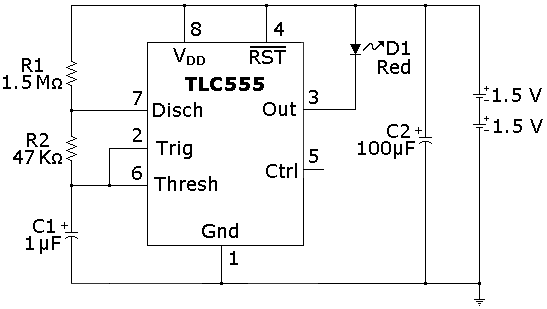
ILUSTRACIÓN
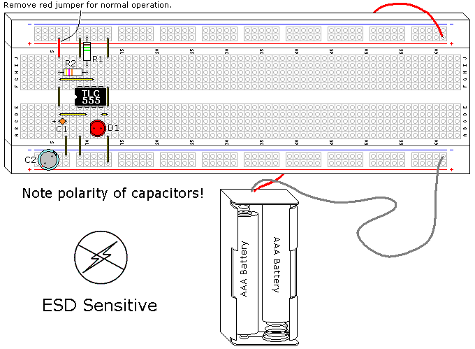
INSTRUCCIONES
¡NOTA! Este proyecto utiliza una parte sensible a la estática, el CMOS 555. Si no utiliza protección como se describe en el Volumen 3, Capítulo 9,Descarga electrostática, corres el riesgo de destruirlo.
El 555 no es un consumidor de energía, pero es un hijo de la década de 1970, creado en 1971. Agotará una batería en días, si no en horas. Afortunadamente, el diseño se ha reinventado utilizando la tecnología CMOS. La nueva implementación no es perfecta, ya que carece de la fantástica unidad de corriente del original, pero para un dispositivo CMOS la corriente de salida sigue siendo muy buena. Las principales ventajas incluyen un rango de voltaje de suministro más amplio (las especificaciones de la fuente de alimentación son de 2 V a 18 V y funcionará con una batería de 11/2 V) y bajo consumo de energía. Este proyecto utiliza el TLC555, un diseño de Texas Instruments. Existen otros CMOS 555, muy similares pero con algunas diferencias. Estos chips están diseñados para ser reemplazos directos y funcionan muy bien siempre que la salida no esté sustancialmente cargada.
Este diseño convierte un déficit en una ventaja, ya que el controlador de corriente solo empeora con voltajes de suministro de energía más bajos; sus especificaciones no superan los 3 mA para 2 V CC. Este diseño intenta hacer que las baterías duren el mayor tiempo posible utilizando varios enfoques diferentes. El CMOS IC tiene una corriente extremadamente baja y envía al LED un pulso de 30 ms (que es un tiempo muy corto pero dentro de la persistencia de la visión humana), además de utilizar una velocidad de destello lenta (1 segundo) utilizando resistencias realmente grandes para minimizar la corriente. Con un ciclo de trabajo del 3%, este circuito pasa la mayor parte del tiempo apagado y (suponiendo 20 mA para el LED) la corriente promedio es de 0,6 mA. El gran problema es utilizar la limitación de corriente incorporada de este IC, ya que no está clasificado para una corriente específica y la corriente del LED puede variar mucho entre diferentes IC CMOS.
Es posible tener problemas con los condensadores electrolíticos cuando se trata de corrientes muy bajas (2 µa en este caso), ya que la fuga puede ser excesiva, una condición límite de falla. Si su experimento parece hacer esto, podría solucionarlo cargando la batería y luego descargando el condensador C1 a través de cualquier conductor varias veces.
Cuando complete este circuito, el LED debería comenzar a parpadear y continuaría haciéndolo durante varios meses. Si utiliza baterías más grandes, como las de tipo D, esta duración aumentará drásticamente.
Para medir el consumo de corriente que alimenta el LED, conecte C1+ a Vcc con un puente (que se muestra en rojo en la ilustración), que encenderá el TLC555. Mida el amperaje que fluye desde la batería al circuito. La corriente objetivo es de 20 ma, medí de 9 ma a 24 ma usando diferentes CMOS 555. Esto no es crítico, aunque afectará la duración de la batería.
TEORÍA DE FUNCIONAMIENTO
Un lector observador notará que este es fundamentalmente el mismo circuito que se usó en el555 AUDIO OSCILLATORexperimento. Muchos diseños utilizan los mismos diseños y conceptos básicos de diferentes maneras, este es un caso. Un IC 555 convencional funcionaría en este diseño si la fuente de alimentación no fuera tan baja y se utilizara una resistencia limitadora de corriente LED. Aparte del tipo de transistores utilizados, el diagrama de bloques que se muestra en la Figura 1Es básicamente lo mismo que un 555 convencional.
{kind=link}
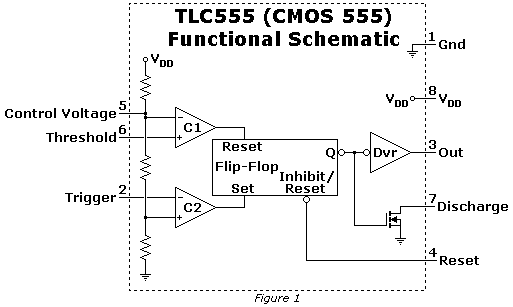
Este oscilador en particular depende del transistor del pin 7, muy parecido al multivibrador monoestable 555 mostrado en un experimento anterior. La condición de arranque es con el capacitor descargado, la salida alta y el transistor del pin 7 apagado. El condensador comienza a cargarse como se muestra en la Figura. 2.
{kind=link}
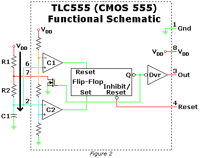
Cuando el voltaje entre los pines 2 y 6 alcanza 2/3 de la fuente de alimentación, el flip-flop se reinicia mediante el comparador interno C1, que enciende el transistor del pin 7 e inicia la descarga del condensador C1 a través de R2, como se muestra en la Figura. 3. La corriente que se muestra a través de R1 es incidental y no es importante más que agotar la batería. Por eso el valor de esta resistencia es tan grande.
{kind=link}
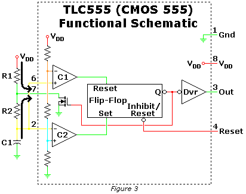
Cuando el voltaje en los pines 2 y 6 alcanza 1/3 de la fuente de alimentación, el flip-flop se configura a través del comparador interno C2, cuando apaga el transistor del pin 7, lo que permite que el capacitor comience a cargarse nuevamente a través de R1 y R2, como se muestra en la Figura 2. Este ciclo se repite.
El condensador C2 alarga la vida útil de las baterías, ya que almacenará el voltaje durante el 97% del tiempo que el circuito esté apagado, y proporcionará corriente durante el 3% que esté encendido. Esta simple adición hará que las baterías superen su vida útil por un amplio margen.
Al realizar este experimento hubo un mecanismo de retroalimentación que no había previsto. La corriente de salida del TLC555 no es proporcional, a medida que el voltaje de la fuente de alimentación disminuye, la corriente de salida se reduce mucho más. Mi flasher duró 6 meses antes de que terminara el experimento. Todavía estaba parpadeando, pero estaba muy tenue.
CMOS 555 LONG DURATION BLUE LED FLASHER
PIEZAS Y MATERIALES
- Dos pilas AAA
- Clip de batería (catálogo de Radio Shack # 270-398B)
- U1 - IC temporizador 1CMOS TLC555 (catálogo de Radio Shack n.º 276-1718 o equivalente)
- Q1 - Transistor PNP 2N3906 (catálogo de Radio Shack n.º 276-1604 (paquete de 15) o equivalente)
- Q2 - Transistor NPN 2N2222 (catálogo de Radio Shack n.º 276-1617 (paquete de 15) o equivalente)
- CR1 - Diodo 1N914 (catálogo de Radio Shack n.º 276-1122 (paquete de 10) o equivalente, consulte las instrucciones)
- D1 - Diodo emisor de luz azul (catálogo de Radio Shack n.º 276-311 o equivalente)
- R1 - Resistencia 1,5 MΩ 1/4W 5%
- R2 - Resistencia 47 KΩ 1/4W 5%
- R3 - Resistencia 2,2 KΩ 1/4W 5%
- R4 - Resistencia 620 Ω 1/4W 5%
- R5 - Resistencia 82 Ω 1/4W 5%
- C1 - Condensador de tantalio de 1 µF (catálogo de Radio Shack 272-1025 o equivalente)
- C2 - Condensador electrolítico de 100 µF (catálogo de Radio Shack 272-1028 o equivalente)
- C3 - Condensador electrolítico de 470 µF (catálogo de Radio Shack 272-1030 o equivalente)
REFERENCIAS CRUZADAS
Lecciones en circuitos eléctricos, Volumen 1, capítulo 16: “Cálculos de tensión y corriente“
Lecciones en circuitos eléctricos, Volumen 1, capítulo 16: “Resolver en tiempo desconocido”
Lecciones en circuitos eléctricos, Volumen 3, capítulo 4: "Transistores de unión bipolares"
Lecciones en circuitos eléctricos, Volumen 3, capítulo 9: “Descarga electrostática”
Lecciones en circuitos eléctricos, Volumen 4, capítulo 10: “Multivibradores”
OBJETIVOS DE APRENDIZAJE
- Aprenda una aplicación práctica para una constante de tiempo RC
- Conozca una de las varias configuraciones del multivibrador Astable con temporizador 555
- Conocimiento práctico del ciclo de trabajo.
- Cómo manejar piezas sensibles a ESD
- Cómo utilizar transistores para mejorar la ganancia de corriente.
- Cómo usar un capacitor para duplicar voltaje con un interruptor
DIAGRAMA ESQUEMÁTICO
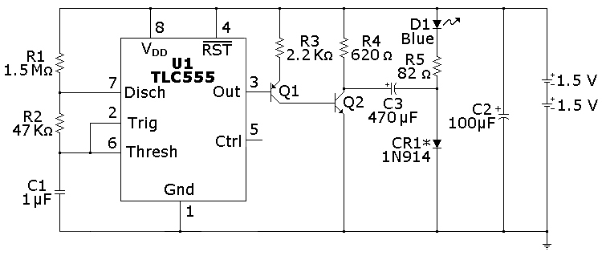
ILUSTRACIÓN
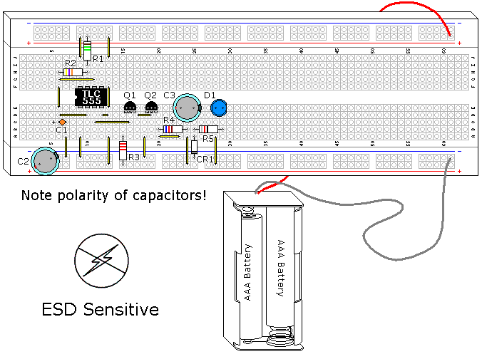
INSTRUCCIONES
¡NOTA! Este proyecto utiliza una parte sensible a la estática, el CMOS 555. Si no utiliza protección como se describe en el Volumen 3, Capítulo 9,Descarga electrostática, corres el riesgo de destruirlo.
Este circuito se basa en los dos experimentos anteriores, utilizando sus características y agregándoles. Los LED azules y blancos tienen un Vf (voltaje de caída directa) más alto que la mayoría, alrededor de 3,6 V. Las baterías de 3 V no pueden funcionar sin ayuda, por lo que se requieren circuitos adicionales.
Como en los circuitos anteriores, el LED recibe un pulso de 0,03 segundos (30 ms). C3 se utiliza para duplicar el voltaje de este pulso, pero solo puede hacerlo por un corto tiempo. Medir la corriente a través del LED no es práctico con este circuito debido a su corta duración, pero los LED azules son generalmente más predecibles porque se inventaron más tarde.
Este diseño particular también se puede utilizar con una sola batería de 1 1/2 V. El concepto básico se creó con un IC ahora obsoleto, el LM3909, que utilizaba un LED rojo, el IC y un condensador. Al igual que con este circuito, podría hacer parpadear un LED rojo durante más de un año con una sola celda D. Cuando los LED rojos más nuevos aumentaron su Vf de 1,5 V a 2,5 V, este antiguo chip ya no era práctico y muchos aficionados todavía lo echan de menos. Si desea probar una batería de 11/2 V, cambie R5 a 10 Ω y use un LED rojo con un CR1 mejor (consulte el siguiente párrafo).
CR1 no es la mejor opción para este componente, se seleccionó porque es una pieza común y funciona. Casi cualquier diodo funcionará en esta aplicación. Los diodos Schottky y de germanio caen mucho menos voltaje, un diodo de silicio cae entre 0,6 y 0,7 V, mientras que un diodo Schottky cae entre 0,1 y 0,2 V y un diodo de germanio cae entre 0,2 V y 0,3 V. Si se utilizan estos componentes, la caída de voltaje reducida se traduciría en una intensidad del LED más brillante, a medida que aumenta la eficiencia del circuito.
TEORÍA DE FUNCIONAMIENTO
Q2 es un interruptor que utiliza este circuito. Cuando Q2 está apagado, C3 se carga al voltaje de la batería, menos la caída del diodo, como se muestra en la Figura 1. Dado que el LED azul Vf es de 3,4 V a 3,6 V, está efectivamente fuera del circuito.
{kind=link}
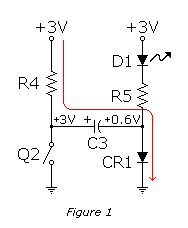
Cifra 2muestra lo que sucede cuando se enciende Q2. El lado + del condensador C3 está conectado a tierra, lo que mueve el lado - a -2,4 V. El diodo CR1 ahora tiene polarización inversa y está fuera del circuito. Los -2,4V se descargan a través de R5 y D1 a los +3,0V de las baterías. Los 5,4 V proporcionan mucho voltaje adicional para encender el LED azul. Mucho antes de que se descargue C3, el circuito vuelve a cambiar y C3 comienza a cargarse nuevamente.
{kind=link}
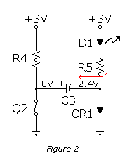
En el LM3909 CR1 había una resistencia. El diodo se usó para minimizar la corriente, permitiendo que R4 sea su valor máximo.
Es posible que notes un brillo azul tenue en el LED azul cuando está apagado. Esto demuestra la diferencia entre teoría y práctica, 3V son suficientes para causar alguna fuga a través del LED azul, aunque no sea conductor. Si midieras esta corriente sería muy pequeña.
CMOS 555 LONG DURATION FLYBACK LED FLASHER
PIEZAS Y MATERIALES
- Dos pilas AAA
- Clip de batería (catálogo de Radio Shack # 270-398B)
- U1, U2 - IC temporizador CMOS TLC555 (catálogo de Radio Shack n.º 276-1718 o equivalente)
- Q1 - Transistor PNP 2N3906 (catálogo de Radio Shack n.º 276-1604 (paquete de 15) o equivalente)
- Q2 - Transistor NPN 2N2222 (catálogo de Radio Shack n.º 276-1617 (paquete de 15) o equivalente)
- D1 - Diodo emisor de luz roja (catálogo de Radio Shack n.º 276-041 o equivalente)
- D2 - Diodo emisor de luz azul (catálogo de Radio Shack n.° 276-311 o equivalente)
- R1 - Resistencia 1,5 MΩ 1/4W 5%
- R2 - Resistencia 47 KΩ 1/4W 5%
- R3,R5 - Resistencia 10 KΩ 1/4W 5%
- R4 - 1 MΩ 1/4W 5% Resistencia r
- R6 - Resistencia 100 KΩ 1/4W 5%
- R7 - Resistencia 1 KΩ 1/4W 5%
- C1 - Condensador de tantalio de 1 µF (catálogo de Radio Shack n.° 272-1025 o equivalente)
- C2 - Condensador de disco cerámico de 100 pF (catálogo de Radio Shack n.° 272-123)
- C3 - Condensador electrolítico de 100 µF (catálogo de Radio Shack 272-1028 o equivalente)
- L1 - Inductor o inductor de 200 µH (el valor exacto no es crítico, consulte el final del capítulo)
REFERENCIAS CRUZADAS
Lecciones en circuitos eléctricos, Volumen 1, capítulo 16: Título "Respuesta transitoria del inductor"
Lecciones en circuitos eléctricos, Volumen 1, capítulo 16: Título "¿Por qué L/R y no LR?"
Lecciones en circuitos eléctricos, Volumen 3, capítulo 4: Título "El amplificador de emisor común"
Lecciones en circuitos eléctricos, Volumen 3, capítulo 9: Título "Descarga electrostática"
Lecciones en circuitos eléctricos, Volumen 4, capítulo 10: Título "Multivibradores monoestables"
OBJETIVOS DE APRENDIZAJE
- Conozca otro modo de funcionamiento del 555
- Cómo manejar piezas ESD
- Cómo utilizar un transistor para una puerta simple (inversor de transistor de resistencia)
- Cómo los inductores pueden convertir energía mediante un retorno inductivo
- Cómo hacer un inductor
DIAGRAMA ESQUEMÁTICO
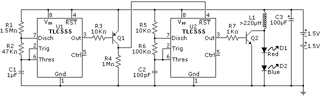
ILUSTRACIÓN
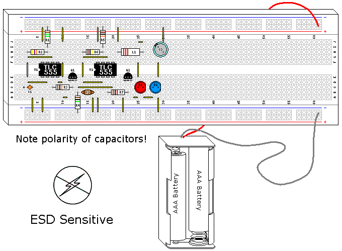
INSTRUCCIONES
¡NOTA! Este proyecto utiliza una parte sensible a la estática, el CMOS 555. Si no utiliza protección como se describe en el Volumen 3, Capítulo 9,Descarga electrostática, corres el riesgo de destruirlo.
Este experimento en particular se basa en otro experimento, "Diodo de conmutación" (Volumen 6, capítulo 5). Vale la pena revisar esa sección antes de continuar.
Este es el último de la serie de luces intermitentes LED de larga duración. Han mostrado cómo usar un CMOS 555 para hacer parpadear un LED y cómo aumentar el voltaje de las baterías para permitir que se use un LED con mayor caída de voltaje que las baterías. Aquí estamos haciendo lo mismo, pero con un inductor en lugar de un condensador.
El concepto básico está adaptado de otro invento, el Joule Thief. Un ladrón de julios es un oscilador de transistor simple que también utiliza un retroceso inductivo para encender un LED de luz blanca de una batería de 11/2, ¡y el LED necesita al menos 3,6 voltios para comenzar a conducir! Al igual que el ladrón de julios, es posible utilizar 11/2 voltios para que este circuito funcione. Sin embargo, dado que un CMOS 555 tiene una potencia nominal de 2 voltios, no se recomienda un mínimo de 11/2 voltios, pero podemos aprovechar la eficiencia extrema de este circuito. Si desea obtener más información sobre el ladrón de julios, puede encontrar mucha información en la web.
Este circuito también puede controlar más de 1 o 2 LED en serie. A medida que aumenta el número de LED, la capacidad de las baterías para durar mucho tiempo disminuye, ya que la cantidad de voltaje que el inductor puede generar depende en cierta medida del voltaje de la batería. Para los fines de este experimento, se utilizaron dos LED diferentes para demostrar su independencia de la caída de voltaje del LED. La alta intensidad del LED azul inunda el LED rojo, pero si miras de cerca encontrarás que el LED rojo tiene su brillo máximo. Puedes utilizar prácticamente cualquier color de LED que elijas para este experimento.
Generalmente, el alto voltaje creado por el retroceso inductivo es algo que debe eliminarse. Este circuito lo usa, pero si comete un error con la polaridad de los LED, es probable que el LED azul, que es más sensible a ESD, se apague (esto se ha verificado). Un pulso incontrolado de una bobina se asemeja a un evento de ESD. El transistor y el TLC555 también pueden estar en riesgo.
El inductor de este circuito es probablemente la parte menos crítica del diseño. El término inductor es genérico, también puedes encontrar este componente llamado estrangulador o bobina. Una bobina de solenoide también funcionaría, ya que también es un tipo de inductor. También lo sería la bobina de un relé. De todos los componentes que he usado, este es probablemente el menos crítico con el que me he encontrado. De hecho, las bobinas son probablemente el componente más práctico que existe que puedes fabricar tú mismo. Explicaré cómo hacer una bobina que funcione en este diseño después de la Teoría de funcionamiento, pero la pieza que se muestra en la ilustración es un estrangulador de 200 µH que compré en un minorista local de electrónica.
TEORÍA DE FUNCIONAMIENTO
Tanto los condensadores como los inductores almacenan energía. Los condensadores intentan mantener un voltaje constante, mientras que los inductores intentan mantener una corriente constante. Ambos se resisten al cambio en su aspecto respectivo. Esta es la base del transformador flyback, que es un circuito común utilizado en circuitos CRT antiguos y otros usos donde se necesita alto voltaje con un mínimo de complicaciones. Cuando cargas una bobina, un campo magnético se expande a su alrededor, básicamente es un electroimán y el campo magnético es energía almacenada. Cuando la corriente se detiene, este campo magnético colapsa, creando electricidad cuando el campo cruza los cables de la bobina.
Este circuito utiliza dos multivibradores astables. El primer multivibrador controla el segundo. Ambos están diseñados para corriente mínima, al igual que el inversor fabricado con Q1. Ambos osciladores son muy similares; el primero ya se ha tratado en experimentos anteriores. El problema es que permanece encendido o alto el 97% del tiempo. En los circuitos anteriores usamos el estado bajo para encender el LED, en este caso el estado alto es lo que enciende el segundo multivibrador. El uso de un inversor de transistor simple diseñado para corriente muy baja resuelve este problema. En realidad, se trata de una familia lógica muy antigua, RTL, que es la abreviatura de lógica de transistor de resistencia.
El segundo multivibrador oscila a 68,6 KHz, con una onda cuadrada que ronda el 50%. Este circuito utiliza exactamente los mismos principios que se muestran en laIntermitente LED de piezas mínimas. Nuevamente, las resistencias prácticas más grandes se utilizan para minimizar la corriente, y esto significa un capacitor realmente pequeño para C2. Esta onda cuadrada de alta frecuencia se utiliza para encender y apagar Q2 como un simple interruptor.
Cifra 1muestra lo que sucede cuando el Q2 está conduciendo y la bobina comienza a cargarse. Si Q2 permaneciera encendido, se produciría un cortocircuito efectivo en las baterías, pero como esto es parte de un oscilador, esto no sucederá. Antes de que la bobina pueda alcanzar su corriente máxima, Q2 cambia y el interruptor está abierto.
{kind=link}
Cifra 2muestra Q2 cuando se abre y la bobina está cargada. La bobina intenta mantener la corriente, pero si no hay una ruta de descarga no puede hacerlo. Si no existiera un camino de descarga la bobina crearía un pulso de alto voltaje, buscando mantener la corriente que circulaba por ella, y este voltaje sería bastante alto. Sin embargo, tenemos un par de LED en la ruta de descarga, por lo que el pulso de las bobinas llega rápidamente a la caída de voltaje de los LED combinados y luego descarga el resto de su carga como corriente. Como resultado, no se genera alto voltaje, pero hay una conversión al voltaje requerido para encender los LED.
{kind=link}
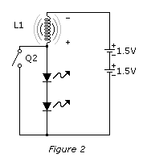
Los LED son pulsados y la curva de luz sigue bastante de cerca la curva de descarga de la bobina. Sin embargo, el ojo humano promedia esta salida de luz a algo que percibimos como luz continua.
HOW TO MAKE AN INDUCTOR
PIEZAS Y MATERIALES
- 26 Feet (8 Meters) of 26AWG Magnet Wire (Radio Shack catalog #278-1345 or equivalent)
- 6/32X1.5 inch screw, a M4X30mm screw, or a nail of similar diameter cut down to size, steel or iron, but not stainless
- Contratuerca a juego (opcional)
- Cinta transparente (opcional, necesaria si se usan tornillos)
- Súper pegamento
- Soldador, Soldadura
Como se mencionó anteriormente, esta no es una pieza de precisión. Los inductores en general pueden tener una gran variación para muchas aplicaciones, y este específicamente puede tener una gran variación. El objetivo aquí es superior a 220 µH.
Si está utilizando un tornillo, use una capa de cinta transparente entre las roscas y el cable. Esto es para evitar que las roscas del tornillo corten el cable y provoquen un cortocircuito en la bobina. Si está utilizando una contratuerca, colóquela en el tornillo a 1" (25 mm) de la cabeza del tornillo. Comenzando aproximadamente a 1" de un extremo del cable, use el pegamento para fijar el cable en la cabeza del clavo o tornillo como se muestra. Deja que el pegamento se asiente.
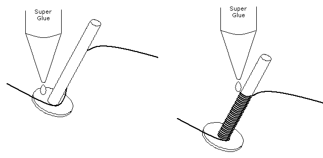
Enrolle el cable de manera ordenada y firme a 1" de la longitud del tornillo, clavándolo nuevamente en su lugar con superpegamento. (Figuraanterior). Puedes utilizar un taladro de velocidad variable para ayudarte con esto, siempre y cuando tengas cuidado. Como todos los aparatos eléctricos, puede morderte. Sujeta el cable con fuerza hasta que el pegamento se endurezca y luego comienza a enrollar una segunda capa sobre la primera. Continúe este proceso hasta que se use todo el cable, excepto el último 1", usando el pegamento para fijar el cable de vez en cuando. Coloque el cable en la última capa de modo que el segundo cable del inductor quede en el otro extremo del tornillo, lejos del primero. Sujete esto por última vez con el pegamento. Deje secar por completo.
{kind=link}
Con cuidado, toma una cuchilla afilada y raspa el esmalte de cada extremo de los dos cables. Estañe el cobre expuesto con el soldador y la soldadura, y ahora tendrá un inductor funcional que puede usarse en este experimento.
Así es como se veía el que hice: Figuraa continuación.
{kind=link}
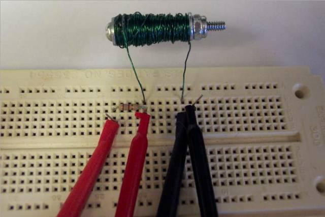
Las conexiones que se muestran se utilizan para medir la inductancia, que resultó bastante cercana a 220 µH.
CMOS 555 LONG DURATION RED LED FLASHER
PIEZAS Y MATERIALES
- Dos pilas AAA
- Clip de batería (catálogo de Radio Shack # 270-398B)
- Un DVM o VOM
- U1 - IC temporizador CMOS TLC555 (catálogo de Radio Shack n.º 276-1718 o equivalente)
- Q1 - Transistor PNP 2N3906 (catálogo de Radio Shack n.º 276-1604 (paquete de 15) o equivalente)
- Q2 - Transistor NPN 2N2222 (catálogo de Radio Shack n.º 276-1617 (paquete de 15) o equivalente)
- D1 - Diodo emisor de luz roja (catálogo de Radio Shack n.º 276-041 o equivalente)
- R1 - Resistencia 1,5 MΩ 1/4W 5%
- R2 - Resistencia 47 KΩ 1/4W 5%
- R3 - Resistencia 2,2 KΩ 1/4W 5%
- R4 - Resistencia de 27 Ω 1/4W 5% (o pruebe seleccione un mejor valor)
- C1 - Condensador de tantalio de 1 µF (catálogo de Radio Shack 272-1025 o equivalente)
- C2 - Condensador electrolítico de 100 µF (catálogo de Radio Shack 272-1028 o equivalente)
REFERENCIAS CRUZADAS
Lecciones en circuitos eléctricos, Volumen 1, capítulo 16: “Cálculos de tensión y corriente”
Lecciones en circuitos eléctricos, Volumen 1, capítulo 16: “Resolver en tiempo desconocido”
Lecciones en circuitos eléctricos, Volumen 3, capítulo 4: "Transistores de unión bipolares"
Lecciones en circuitos eléctricos, Volumen 3, capítulo 9: “Descarga electrostática”
Lecciones en circuitos eléctricos, Volumen 4, capítulo 10: “Multivibradores”
OBJETIVOS DE APRENDIZAJE
- Aprenda una aplicación práctica para una constante de tiempo RC
- Conozca una de las varias configuraciones del multivibrador Astable con temporizador 555
- Conocimiento práctico del ciclo de trabajo.
- Cómo manejar piezas sensibles a ESD
- Cómo utilizar transistores para mejorar la ganancia de corriente.
- Cómo calcular la resistencia correcta para un LED
DIAGRAMA ESQUEMÁTICO
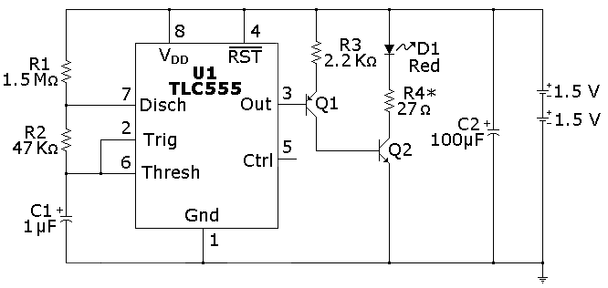
ILUSTRACIÓN
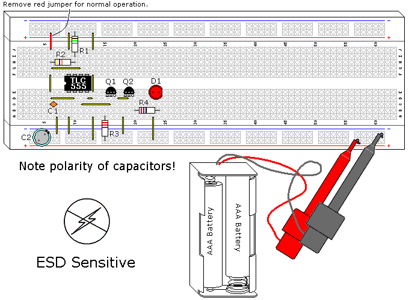
INSTRUCCIONES
¡NOTA! Este proyecto utiliza una parte sensible a la estática, el CMOS 555. Si no utiliza protección como se describe en el Volumen 3, Capítulo 9,Descarga electrostática, corres el riesgo de destruirlo.
El circuito mostrado en el experimento anterior,CMOS 555 Intermitente LED rojo de piezas mínimas de larga duración, tiene un gran inconveniente, que es la falta de control de corriente del LED. Este experimento utiliza el mismo esquema básico del 555 y agrega controladores transistorizados para corregir esto.
Las piezas utilizadas para este controlador de transistores no son críticas. Está diseñado para cargar el TLC555 al mínimo absoluto y aún así encender Q2 por completo. Esto es importante porque a medida que el voltaje de la batería se acerca a los 2 V, la unidad del TLC555 se reduce a sus valores mínimos. Los transistores bipolares pueden ser buenos interruptores.
Dado que los LED pueden tener tanta variación, R4 debe modificarse para que coincida con el LED específico utilizado. La corriente está limitada a 18,5 ma con 27 Ω y un Vf (voltaje de caída directa del LED) de 2,5 V, un LED Vf de 2,1 V consumirá 33 ma y un LED Vf de 1,5 consumirá 56 ma. Esta corriente es demasiado alta, sin mencionar lo que eso afectaría a la duración de la batería. Para corregir esto, utilice 47 Ω si Vf es de 2,1 V y 75 Ω si Vf es de 1,5 V, suponiendo que la corriente objetivo sea de 20 mA.
Puede medir Vf utilizando el puente que se muestra en rojo en la ilustración, que encenderá el LED en todo momento. Puedes calcular el valor de R4 usando la ecuación:
R4 = (3V-Vf) / 0.02AEn el experimento anterior se mencionó que el condensador C2 prolongó la vida útil de las baterías. Un experimento interesante es quitar esta pieza periódicamente y ver qué sucede. Al principio notarás una atenuación del LED y, después de una semana o dos, el circuito se apagará sin él y volverá a funcionar en un par de segundos cuando se reemplace. Esta luz intermitente funcionará durante 3 meses utilizando pilas alcalinas AAA nuevas.
TEORÍA DE FUNCIONAMIENTO
El oscilador CMOS 555 se explicó detalladamente en el experimento anterior, por lo que el controlador del transistor será el foco de esta explicación.
El controlador de transistor combina elementos de una configuración de colector común en Q1, junto con una configuración de emisor común en Q2. Esto permite una resistencia de entrada muy alta y al mismo tiempo permite que Q2 se encienda completamente. La resistencia de entrada del transistor es la β (ganancia) del transistor multiplicada por la resistencia del emisor. Si Q1 tiene una ganancia de 50 (un valor mínimo), entonces el controlador carga el TLC555 con más de 100 KΩ. Los transistores pueden tener grandes variaciones de ganancia, incluso dentro de la misma familia.
Cuando Q1 se enciende, 1ma se envía a Q2. Esto es más que suficiente para activar Q2 por completo, lo que se conoce como saturación. Q2 se utiliza como un simple interruptor para el LED.
Lecciones en circuitos eléctricoscopyright (C) 2002-2023 Tony R. Kuphaldt, según los términos y condiciones delCC BY License.